|
|
|

Example Using ITDI to Feed Identity Data into ISIM
Contents
Part (a) Using ISIM's Reconciliation Mechanism To Query ITDI
for an Identity Feed
Part (b) Using ITDI to parse a Comma Separated File and
Feeding into ISIM with the JNDI Feed Mechanism
(i) Connector in Add-Only Mode
(ii) Connector in Update Mode
(iii) Connector in Delete Mode
(iv) Adding People to a Specific Place in the
Organization Tree
(v) Setting Organizational Roles and Supervisor
Relationships
Internationalization
Troubleshooting the Examples
Part (a) Using ISIM's Reconciliation Mechanism To Query ITDI for an Identity Feed
In this example we will use ISIM's reconciliation function to query ITDI for entries that will be interpreted as people. ITDI will parse a comma separated (CSV) file and map the data found to the attributes that we want to import into ISIM's data store. Here ISIM acts as a DSMLv2 client and ITDI acts as a server.
ISIM includes a service type erDSMLv2Service, named ITDI Data Feed in the user interface. A service instance of this type can be used to perform an identity feed using the ISIM reconciliation mechanism.
To add a service instance for this example follow these steps in the ISIM user interface:
- Navigate to the Service Management screen.
- Add a new service of type ITDI data feed with these parameters:
- name: you may pick any name. The name in this example is DSMLv2 HR Load.
- erurl: http://host:port , where host is the host name of the machine where ITDI is installed. In this example, we will use localhost and port 8800, so the url is http://localhost:8800.
- Naming Context: dc=HRLoad
An example of this service instance is shown in Figure 1.
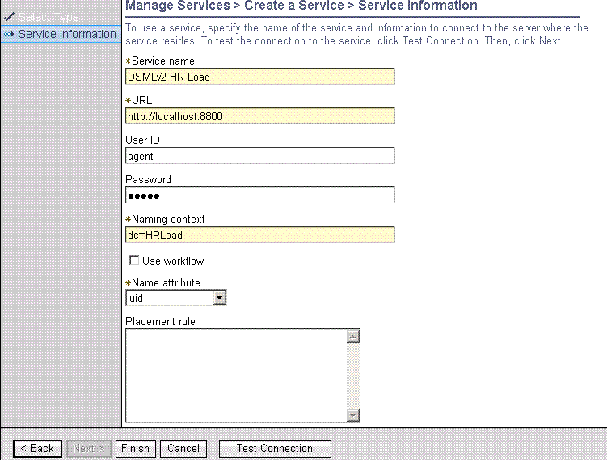
Figure 1: Screen Shot of DSMLv2 Service Instance
In this example we will not use the user id and password. However, the user id and password fields entered on this form may be used for authentication for both incoming and outgoing communication. It will be used later in an extension of this example.
Once you have configured and started ITDI you can come back to this screen and select the Test button to test connectivity to ITDI.
To configure ITDI several steps are required. The configuration file hrfeed_server.xml is supplied and configured for this example. You may use that file or follow the steps here to create the configuration. If you choose to use the given file you will need to modify certain parameters, including the host url of the server, authentication particulars, and the location of the CSV file.
The example data file is People1.csv, which is a comma separated file containing a single entry:
First;Last;Title
Barry;Manillo;70s Pop Singer
Although this document refers to the file as a 'comma separated variables' file, the delimiter is ';'. The first row of the table gives the attribute names of the fields.
|
Note: In TDI 7.0, ibmdi.DSMLv2SoapServerConnector replaces ibmdi.DSMLv2EventHandler.
|
Follow these steps in the ITDI ibmditk user interface to configure ITDI. To migrate from an existing TDI 6.x solution to TDI 7.0, delete the DSMLv2 EventHandler in the existing TDI 6.x solution and perform steps 9-21 from the following procedure:
- Create a new project. For example, name the project as TDI_TIM.
- Create an assembly line named as processSearch. This will be referred to by ibmdi.DSMLv2SoapServerConnector.
- Add a connector of type File System Connector to read the CSV file. It should be defined in iterator mode.
- Enter the parameter ${EXAMPLES_HOME}/People1.csv in the configuration screen.
- Set the parser type to be ibmdi.CSV in the Inheritance Configuration Dialog screen.
- Create an Input Map to map the data from the CSV file to the inetorgperson schema used in the ISIM data store.
The schema for inetorgperson is defined in RFC 2798, available at http://www.faqs.org/rfcs/rfc2798.html.
- Click the Connect toolbar button in the Input Map tab of the FileSystem Connector, and then click the Next toolbar button.
You should see the First, Last, and Title attributes listed.
- Configure the input map for the connector with these values:
- $dn, Advanced mapping:
ret.value="uid=" + conn.getString("Last");
- Title, select Title
- cn, Advanced mapping:
ret.value=conn.getString("First") + " " + conn.getString("Last");
- givenname: select First
- objectclass, Advanced mapping:
ret.value="inetorgperson";
or for express 4.6
ret.value="erexpressperson";
- sn, select Last
- uid: select Last
- Create another assembly line, named as TIMListener.
- Add a connector of type ibmdi.DSMLv2SoapServerConnector in Server mode. Name it dsmlv2server.
- Enter 8800 for the port in the connection tab. Then click on Advanced section and uncheck the "SOAP Bindings" check box that is checked by default.
- Add dsml.base and dsml.operation as Work Attribute in the Input Map tab. See Figure 2.
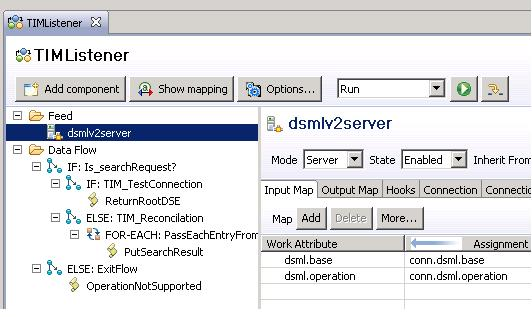
Figure 2: Screenshot of Input Map tab of DSMLv2SoapServerConnector
- Add dsml.operation and assignment as work.dsml.operation in the Output Map tab. See Figure 3.
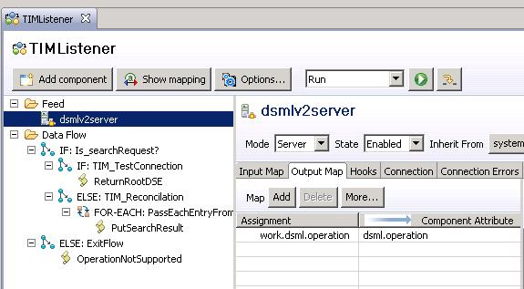
Figure 3: Screenshot of Output Map tab of DSMLv2SoapServerConnector
- Add an IF Branch named as Is_searchRequest? in the Data Flow section, and specify the following condition:
ret.value = "searchRequest".equals(work.getString("dsml.operation"));
See Figure 4.
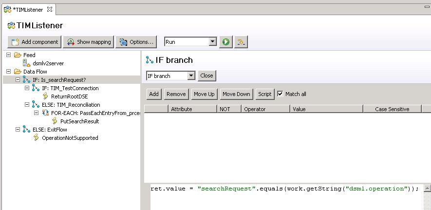
Figure 4: Screenshot of If-branch (Is_searchRequest?)
- Add an IF Branch named as TIM_TestConnection in the Data Flow section, and specify the following condition:
ret.value = "".equals(work.getString("dsml.base"));
See Figure 5.
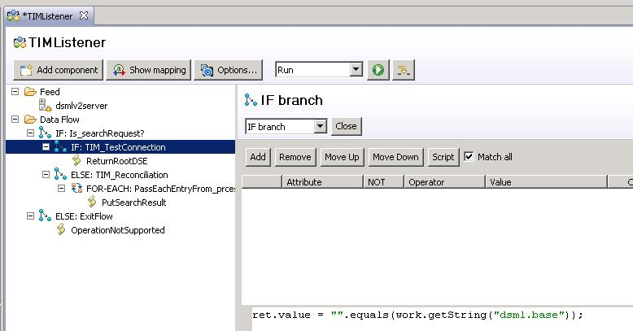
Figure 5: Screenshot of If-branch (TIM_TestConnection)
- Right-click on the TIM_TestConnection Branch.
- Add a Script Component named as ReturnRootDSE, and add the following script in it:
var e = system.newEntry();e.setAttribute("namingContexts", "dc=HRLoad");e.setAttribute("$dn", "");dsmlv2server.connector.putEntry(e);
- Add an ELSE Branch named as TIM_Reconciliation in the Data Flow section.
- Right-click on the TIM_Reconciliation Branch, and add a Connector Loop component (present under Control/Flow compoents). Inherit From: AssemblyLineConnector. See Figure 6.
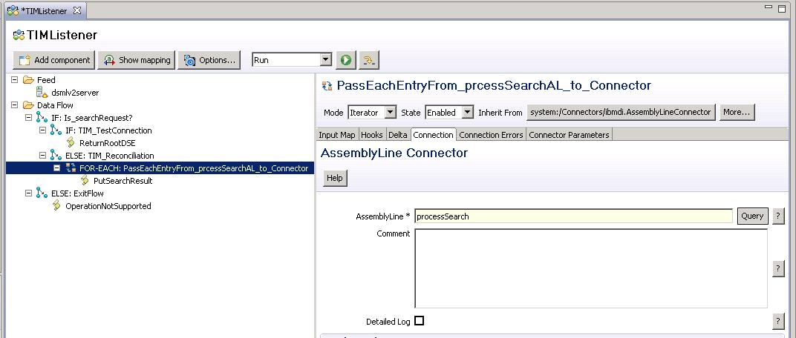
Figure 6: Screenshot of Connector Loop with AssemblyLineConnector
- Add * to map all attributes in the Input Map tab.
- Select the processSearch AssemblyLine in the connection tab.
- Right-click on the Connector Loop component, and add a script component named as PutSearchResult, and add the following script in it:
var e = system.newEntry();e.setAttribute(work.getAttribute("$dn"));e.setAttribute(work.getAttribute("Title"));e.setAttribute(work.getAttribute("cn"));e.setAttribute(work.getAttribute("givenname"));e.setAttribute(work.getAttribute("objectClass"));e.setAttribute(work.getAttribute("sn"));e.setAttribute(work.getAttribute("uid"));dsmlv2server.connector.putEntry(e);
- Add an ELSE Branch named as Exit_Flow in the Data Flow section.
- Right-click on the Exit_Flow Branch.
- Add a Script Component named as OperationNotSupported, and add the following script in it:
var requestOperation = work.getString("dsml.operation");work.setAttribute("dsml.operation", "errorResponse");work.setAttribute("dsml.errorType", "other");work.setAttribute("dsml.message", "Unsupported operation: "+requestOperation);
To run the example follow these steps:
- In the ibmditk, select the ISIM Listener assembly line and click the run button.
- In the ISIM user interface, navigate to the DSMLv2 HR Load. Enter the password again and select the Test button. Check that the result is successful.
- Navigate to the DSMLv2 HR Load server and run a reconciliation.
- Go to the View Completed Requests page to make sure the reconciliation completed successfully.
- Navigate to the Manage Users area. Check that there is a new person with the common name Barry Manillo.
Suggestions for extending this example for use in an enterprise deployment:
- Replacing the People1.csv file with a CSV file exported from the enterprise identity data store. You will need to expand he connector input mapping to include a wider range of attributes to either adapt to the out-of-the-box person schema provided with ISIM or create a custom person schema for your enterprise.
- Replace the File System Connector with one of the other connectors provided with ITDI. Examples of useful connectors are Active Directory (ADSI), Relational Database (JDBC), and Domino.
- Change the ITDI connector input map to use a unique distinguished name attribute, such as employee number.
- Add a Person Placement Rule to place people in the correct location in the organization tree.
- Run ITDI in server mode. Once ITDI has been configured using the ibmditk tool, the same configuration file can be loaded into the ibmtisrv server and run as a service with a smaller footprint.
Part (b) Using ITDI to parse a Comma Separated File and Feeding into ISIM with the JNDI Feed Mechanism
(i) Connector in Add-Only Mode
Use the DSMLv2 HR Load service instance created in the first part of this example. To allow this service to be recognized as the appropriate service when receiving a request from ITDI, make this change in the ISIM UI
- In the DSMLv2 HR Load service instance detailed information set the value dc=HRLoad for the field Naming Contexts.
This will correspond to the value for Search Base that we will set within ITDI.
The configuration file hrfeed_jndi_add_only.xml supplied is configured for this example. You may use that file or follow the steps here to he given file you will need to modify certain parameters, including the host url of the server and authentication particulars.
- Start the IBM Directory Server Integrator ibmditk tool.
- Create a new configuration root.
- Create a new assembly line.
- Create a new Connector of type system:/Connectors/ibmdi.FileSystem in iterator mode. In the Configuration tab set the File Path parameter to point to the file "examples/Tutorial/People.cvs" provided with the ITDI examples.
- Add a comma separated variables (CSV) parser to the FileSystem Connector in the Configure Inheritance dialog by setting the Parser field to system:/Parsers/ibmdi:CSV.
- In the Input Map tab of the FileSystem Connector click the Connect toolbar button and then click the Next toolbar button. You should see the First, Last, and Title attributes listed.
- Map the connector attributes to the work attributes. A mapping is needed to map from the attribute names to the ISIM attribute names for inetorgperson.Create these mappings:
- $dn, advanced:
ret.value="uid=" + conn.getString("Last") + "," + JNDIFeed.getConnectorParam("jndiSearchBase"); - Title: Title
- cn, advanced:
ret.value = conn.getString("First") + " " + conn.getString("Last"); - givenName: First
- objectclass, advanced:
ret.value="inetorgperson";
or for express 4.6ret.value="erexpressperson";
- sn: Last
- uid: Last
As an alternative, you could configure the following in the advanced mapping for the attribute; the results are the same.ret.value = conn.getString("Last"); - Add a JNDI Connector to the assembly line. The name of the connector should be JNDIFeed and it should be created in Add Only mode. The reason for the Connector name is that we refer to that name in the script to determine the distinguished name. The configuration parameter 'jndiSearchBase' in the Input Map script in the last step is the search base. In the Configuration tab of the connector set these values for the configuration parameters:
- The host value of localhost in the url parameter should be changed to the host name or ip of the ISIM server in your system. Similarly, the port value 9080, which is the default value for Websphere, should be set to the value on your system.
- In the Output Map of the JNDI Connector add '*' to the Connector Attribute table.
- In the Hooks tab of the JNDI Connector add system.dumpEntry(error); to the Default On Error hook.
- For additional debug purposes, add system.dumpEntry(work);to the Before Add hook.
|
Name |
Value |
Notes |
|
JNDI Driver |
com.ibm.dsml2.jndi.DSML2InitialContextFactory |
|
|
Provider URL |
http://localhost:9080/enrole/dsml2_event_handler/tenant |
'enrole' is a fixed parameter that is the name of the J2EE web module, 'dsml2_event_handler' is a fixed parameter that is the URL mapping of the Servlet that handles the DSML2 request. The 'tenant' is an optional parameter with the tenant name for the organization. |
|
authentication |
Simple |
|
|
Login username |
agent |
|
|
Login password |
agent |
|
|
Name parameter |
$dn |
|
|
Search Filter |
(objectclass=*) |
|
|
Search Base |
dc=HRLoad |
'dc=HRLoad' must match the namingContexts value of the service instance |
|
Note: In TDI 7.0 all the connectors are enhanced to define only mode specific configuration parameters. Following parameters are mode specific. |
When configuration completes, click the run button to run the assembly line.
People should be added to ISIM with names matching those in the People.cvs file. However, there is one row in the file that cannot be accepted. The entry 'Roger' cannot be imported into ISIM because it is missing a surname, 'sn', attribute. This is expected and is a valid error, however, if the Default On Error hook script was not added the error would prevent subsequent entries from being processed.
(ii) Connector in Update Mode
In this part, we will make a couple of changes to the comma separated file and synchronize the changes to ISIM. Copy the file People.csv to People2.csv and open it in a text editor. Make the following changes:
|
Change the line |
To |
|
Bill;Sanderman;Chief Scientist |
William;Sanderman;Chief Scientist |
|
Roger |
Roger; Rabbit; Cartoon Character |
Table 1: Change to Comma Separated Variable File
We need to make a few changes to the ITDI configuration. If you don't want to make the changes by hand, close the existing configuration and open the file hrfeed_jndi_update.xml.
To run this example, use the ISIM user interface to verify the service instance detail for the DSMLv2 HR Load service. Verify that 'uid' is specified as the Name Attribute for the service. This is the name of the attribute for each person entry to use for constructing a distinguished name to return to ITDI. Steps in the ITDI user interface to operate the example in update mode:
- In the File Connector Configuration tab, set File Path to examples/Tutorial/People2.csv.
- In the JNDI Connector panel, change the Mode to Update.
- In the JNDI Connector Configuration panel, set the Search Base to dc=HRLoad
- In the JNDI Connector Configuration panel, set the Search Filter to (objectclass=*)
- In the JNDI Connector output tab, add * to the Attribute Map with both Add and Update checked.
- In the Link Criteria tab of the JNDI Connector set the Link Criteria to
- Modify the output map of the JNDI connector. Specify all the attributes to the output map instead of using the wildcard character '*'. Then deselect the $dn and objectclass attribute for update mode. We will never change these values in update mode and it may cause problems if they are accidentally mis-interpreted as having changed, for example, if they are returned with a different case.
ret.filter="uid=(" + work.getString("uid") + ")";
Run the example by selecting the run icon in the ITDI assembly line. After the assembly line completes, check that Bill Sanderson's given name has been changed to William.
Suggestions for extending this example to an enterprise deployment:
- Check the Use Workflow checkbox in the service instance Detailed Information form. This will cause an audit trail entry to be made for each person change and the provisioning policy to be evaluated for accounts each time a person is added or modified.
(iii) Connector in Delete Mode
To delete people from the ISIM data store using this approach the JNDI connector should be operated in Delete mode. The comma separated list file should contain a list of people to delete. An example of a file for this purpose in People3.csv and the ITDI configuration file hrfeed_jndi_delete.xml is provided. The steps below will create a similar configuration.
The user Mick Kamerun listed in the People3.csv file will be deleted. It is assumed that the reader added that person as described in part (i) of this example.
Continuing on from the example in part (ii) save the configuration file as hrfeed_jndi_delete.xml. Close the update configuration root in the ITDI user interface.
Change the JNDIFeed connector mode to delete. Run the assembly line. Check the ISIM People Management user interface and check that the person is gone.
(iv) Adding People to a Specific Place in the Organization Tree
In this section we will extend the example so that a person can be added to a position in the organization chart matching the name of their department in the CSV file. The person Mick Kamerun will be added back, but this time in the Sales organizational unit. The ITDI configuration file hrfeed_jndi_placement.xml contains the necessary configuration to run this part of the example, if the reader does not wish to follow the steps outlined here.
To prepare ISIM to accept the data, perform these steps in the ISIM user interface:
- In the same organization as the ITDI Data Feed service, add an organizational unit called 'Sales'. This can be done using the Manage Organizational Units, as shown in Figure 7.
- In the service instance detailed information form, add the placement rule:
return "ou=" + entry.departmentnumber[0];
Notice that the attribute name is all in lower case letters. This is necessary because although LDAP attribute names are case insensitive, the directory server returns them in lower case, which must then match the Javascript expression, which is case sensitive.
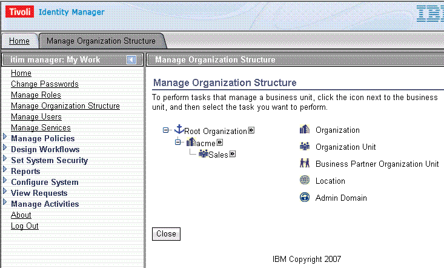
Figure 7: Screen shot of Organization Chart
Copy the file People3.csv to People4.csv. Add an attribute for department with the value 'Sales' as shown below.
First;Last;Title;Department
Mick;Kamerun;VP Sales;Sales
Follow these steps from within the ITDI user interface:
- Open the file created in the update example (hrfeed_jndi_update.xml). Save it to another file and close the original.
- In the Configuration panel of the CSV File Connector, change People3.csv to People4.csv.
- In the Input Map panel of the CSV File Connector, click the flashlight icon to perform quick discovery of schema. This should add the Department attribute to the list of available connector attributes.
- Also in the Input Map panel of the CSV File Connector, add a new Work Attribute called 'departmentnumber'. This is an attribute of the LDAP class inetorgperson. We will map the file connector attribute 'Department' to the LDAP attribute 'departmentnumber'. As described in RFC 2798, it is intended to be used as an alphanumeric department code. Configure the mapping by selecting the checkbox for Department.
- Add the attribute 'departmentnumber' to the output map of the JNDI Connector.
To run the example click the run icon in the ITDI user interface. Check that Mick Kamerun has been added under the Sales organizational unit in the organization tree.
(v) Setting Organizational Roles and Supervisors Relationships
This part of the example will show how to set organizational role and supervisor attributes for people during the identity feed process. The person Mick Kamerun will be given the organizational role of 'Executive' and a new person, Harry Callahan, whose supervisor is Mick Kamerun will be added. The ITDI configuration file hrfeed_jndi_role.xml is provided to match the steps described here.
Add two static Organizational Roles to ISIM called 'Executive' and 'Manager'. This is shown in the screenshot in Figure 8.
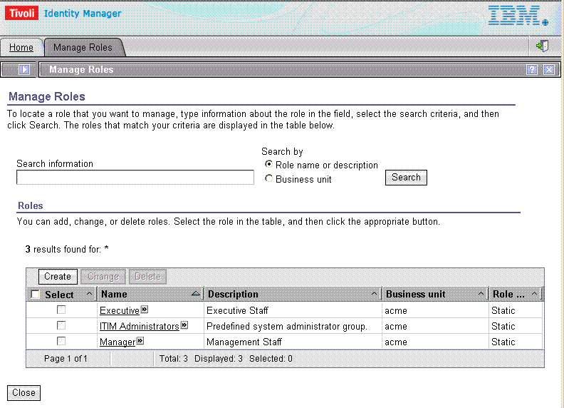
Figure 8: Screenshot of Organizational Role Definition
Copy the file People4.csv to People5.csv. Add attributes for Role and Supervisor as shown below. Also add an additional line for Harry Callahan.
First;Last;Title;Department;Role;Supervisor
Mick;Kamerun;VP Sales;Sales;Executive
Harry;Callahan;Director of Sales;Sales;Manager;Mick Kamerun
To map these attributes to corresponding values in ISIM follow these steps in the ITDI user interface:
- In the Input Map panel of the CSV File Connector, click the Connector icon to connect to the data source, then click the next icon two times. Since Mick Kamerun does not have a supervisor, you need to move to the line with Harry Callahan to discover the 'Supervisor' attribute. You should now see the 'Supervisor' and 'Role' attributes added to the schema.
- In the Input Map panel of the CSV File Connector, add two new work attributes. The first work attribute should be called 'erroles' and be mapped to the 'Role' connector attribute. The second work attribute should be called 'manager' and be mapped to the 'Supervisor' connector attribute.
- Add the attributes 'erroles' and 'manager' to the connector attributes of the output map of the JNDI Connector.
- To run the test, click the run button.
Organizational Role and Supervisor are different than most other attributes discussed so far because they have a special meaning within ISIM. The reason is that they represent relationships to other entities in the system. In the ISIM data store that are stored as pointers to those other entities. A lookup is done by ISIM based on the names in the imported data to set these pointers.
The entities that are pointed to must exist before the relationships are created. The practical implication of this is that the Organizational Roles must be defined before the data feed is performed. In addition, supervisors must appear in the data feed before the people that they are supervising.
After the test has run, check the data in the ISIM user interface in the People Management screens. Screenshots for Harry Callahan are shown in Figures 9 with the Role membership defined in the Personal Information tab and in Figure 10 with the supervisor attribute set to Mick Kamerun.
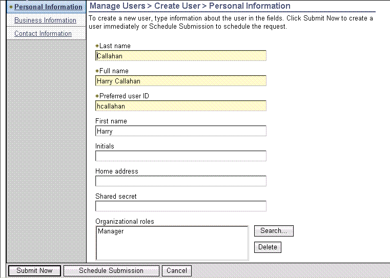
Figure 9: Screenshot Showing Imported Data for Role Membership
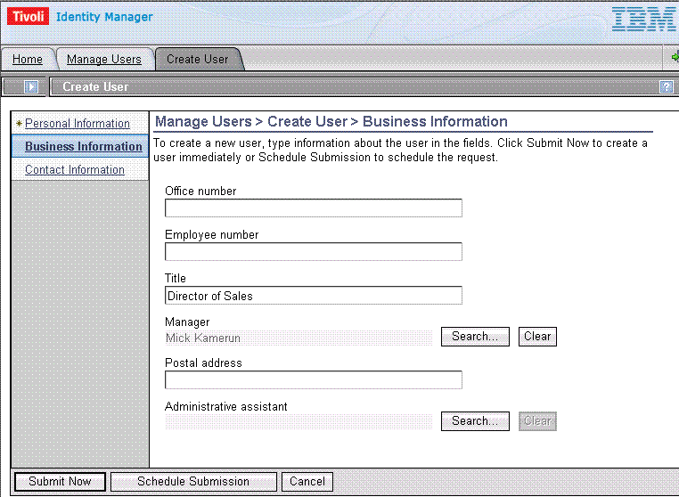
Figure 10: Screenshot Showing Imported Data with Supervisor Relationship
Internationalization
There are two problems to be overcome with locales other than English speaking ones:
- Encodings other than ASCII must be used to represent data.
- Some of the conventions, especially those used in this example document, are not appropriate for all locales. This is more of a cultural problem than a technical one but still must be addressed.
Within ISIM all data is imported, exported, and stored as UTF-8. This includes data transported to and from ITDI. ITDI itself, however, is capable of handling more encodings. In this part of the example we will use a data file encoded in UTF-8 and shipped as PeopleDBCS.U8. A screenshot of the example as shown in a web browser is given in Figure 11.
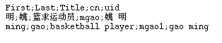
Figure 11: Screenshot Showing UTF-8 Data File with Double Byte Data
For a file connector in ITDI the encoding should be set within the file connector parser tab as shown in Figure 12.
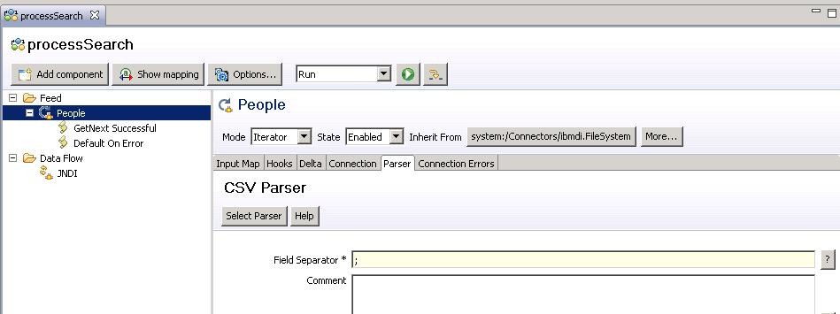
Figure 12: Screenshot of Setting Character Encoding in ITDI File Connector
Other encodings that may be used here are given in the Java platform documentation at java.sun.com.
If the scripts in the previous examples were used for an Asian locale they would result in unusual values for the uid and cn attribute. The suggested practice for uid is to use an ASCII based phonetic description of the name. For the cn attribute (common name) the best approach may be to specify it explicitly in the data file rather than deriving it from a script.
The changes to address these problems are given in the PeopleDBCS.U8 file and the example ITDI configuration file hrfeed_jndi_dbcs.xml. It is a variation of the JNDI update example above.
Before attempting to run this assembly line, you need to remove the placement rule for the service instance that you defined in step Part (b) (iv) - 2 above. Go to the TIM user interface and in the service instance detailed information form, remove the placement rule:
return "ou=" + entry.departmentnumber[0];
Troubleshooting the Examples
uid
attribute
Because many of the updates and deletes depend on the value of the person's uid attribute to lookup their existence and previous data, it is useful to display the value of uid on the personal information form. However, this is not done by default. Add it using the form designer.
Double byte character set data
The locale of ITDI is determined by the operating system or by Java environment variables. Therefore, double byte data may be displayed as '?' characters if the locale is not set to one that selects the right fonts. In this case you may change the ITDI startup script, ibmditk, to use the desired locale. For example, for Chinese, add the following options to the java command.
${ITDI_HOME}/java -Duser.language=zh -Duser.country=CN . . .Binary attributes
Because XML is a text based markup language, binary attributes must be transported over the network using a base 64 encoding. Base 64 encoding is a method for representing binary data as text. ITIM will automatically base 64 decode any value provided by ITDI for a binary attribute. Therefore, any value for a binary attribute (such as a password) in the CSV file must be specified as a base 64 encoded string. Several freeware utilities and web sites exist for base 64 encoding values.